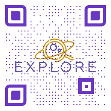

This project has received funding from the European Union'S Horizon research and innovation programme under gran agreement No 101004214. This project has received funding from the European Union'S Horizon research and innovation programme under gran agreement No 871149.

